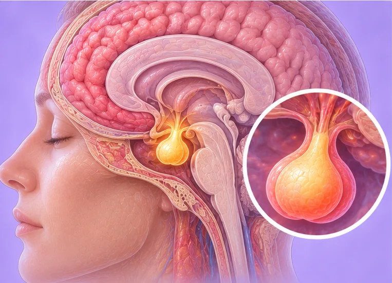

Acromegaly (excess growth hormone)
A hormone condition where too much growth hormone makes hands, feet and face slowly grow larger
What it is
The body makes too much growth hormone, usually in adults. Over many years, hands, feet and facial features can slowly grow larger and joints may ache.
- Whole body
- Mostly adults, slow onset
- Aching joints, bigger hands
- Which doctor
- Hormone doctor (endocrinologist), family doctor
- Common in
- Mostly middle-aged adults; it is not common
- Contagious
- No
- Course
- Develops slowly over years; a doctor can explain tests and care
Common signs

Headache across the foreheadTension-type headache 
Sweating a lotHyperhidrosis 
Loud snoring, tired by daySleep-disordered breathing 
Aching all overMyalgia 
Tired all the timeFatigue
Why it happens

The cause is not fully knownIdiopathic
Other causes
- Most often a small, non-cancerous lump in the pituitary gland under the brain
- Rarely, other growths that make extra hormone
- Rarely, it runs in a family with certain inherited conditions
See a doctor first if
- Sudden very bad headache or sudden loss of vision: go to hospital now
- Chest pain or trouble breathing: call 999
- Face drooping, arm weakness or speech trouble: call 999
- Rings or shoes no longer fit, with headaches or changes in vision
- Very high thirst, or heavy loss of strength
If any apply, please see a doctor before a session.
This page is general information. Please keep taking your normal medicine and keep seeing your doctor.
Keep taking your normal medicine and keep seeing your doctor. Our session is a gentle support and does not replace medical care.
Looking after yourself

See your doctor for check-upsRegular medical follow-up 
Check your blood pressure at homeHome BP monitoring
More ways to look after yourself
- Gentle daily walking can help keep joints moving
- Tell your doctor about snoring or poor sleep
Tell your therapist
- Diabetes or less feeling in the skin
- A heart condition
- High blood pressure
Your therapist will go through this with you before starting.
Questions and answers
What is Acromegaly (excess growth hormone)?
A hormone condition where too much growth hormone makes hands, feet and face slowly grow larger. The body makes too much growth hormone, usually in adults. Over many years, hands, feet and facial features can slowly grow larger and joints may ache.
What are the common signs of Acromegaly (excess growth hormone)?
Headache across the forehead · Sweating a lot · Loud snoring, tired by day · Aching all over · Tired all the time
Why does Acromegaly (excess growth hormone) happen?
The cause is not fully known
How can I look after myself with Acromegaly (excess growth hormone)?
See your doctor for check-ups · Check your blood pressure at home
Can an AI Body Master session help with Acromegaly (excess growth hormone)?
A session is gentle, needle-free meridian support for your wellbeing. It does not treat or cure Acromegaly (excess growth hormone) and never replaces your medicine or your doctor. Tell your therapist about it before the session starts.
Related conditions
References: General information based on public health sources such as Mayo Clinic, NHS, Cleveland Clinic and NCBI StatPearls.
Page updated: 2026-11-04